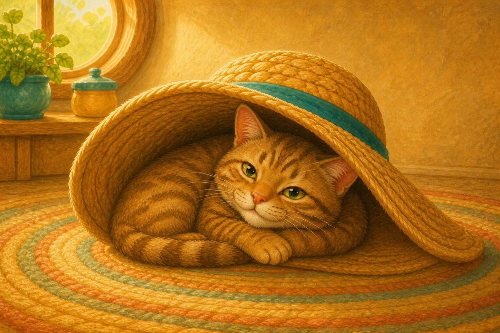
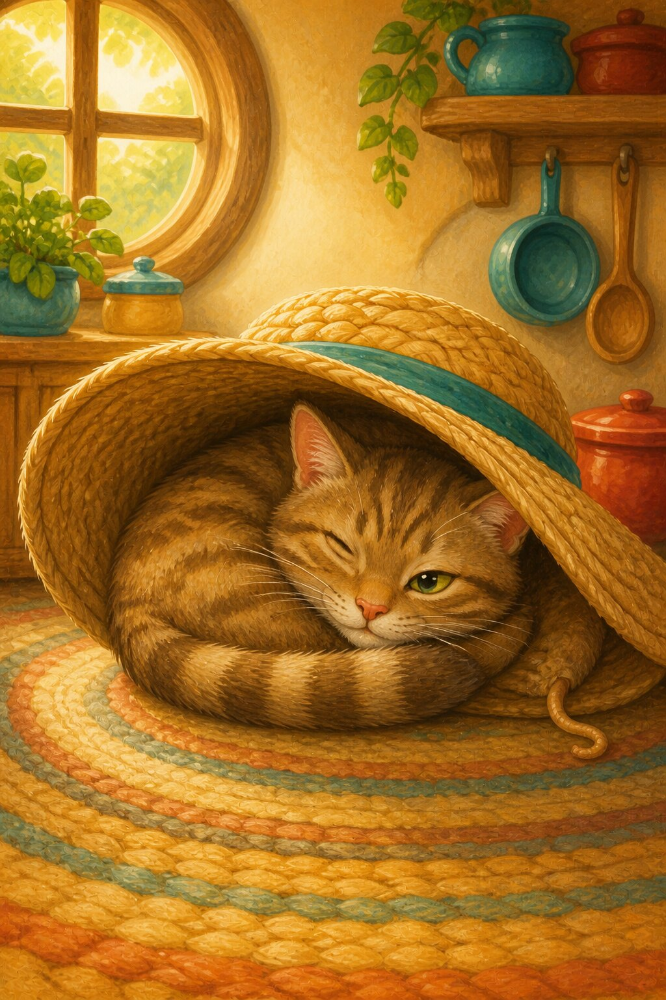
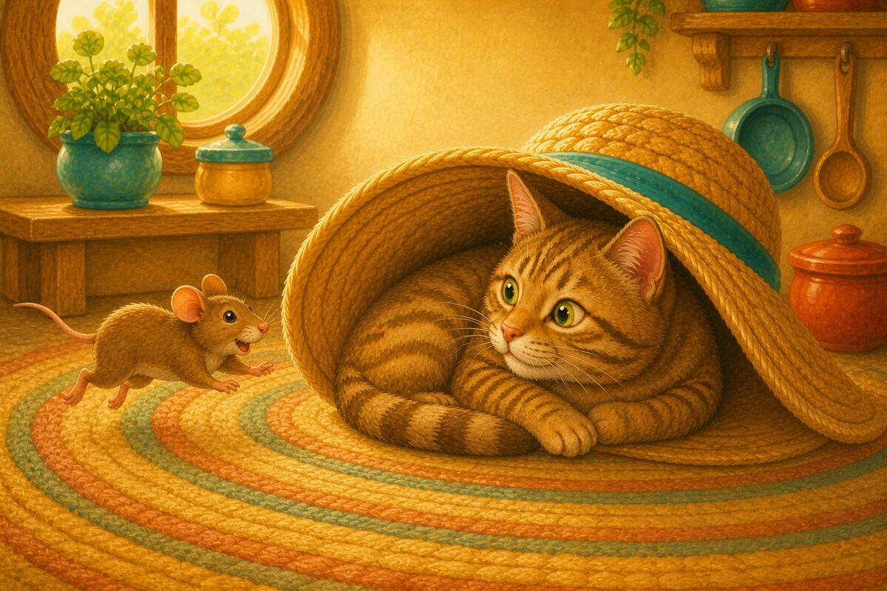
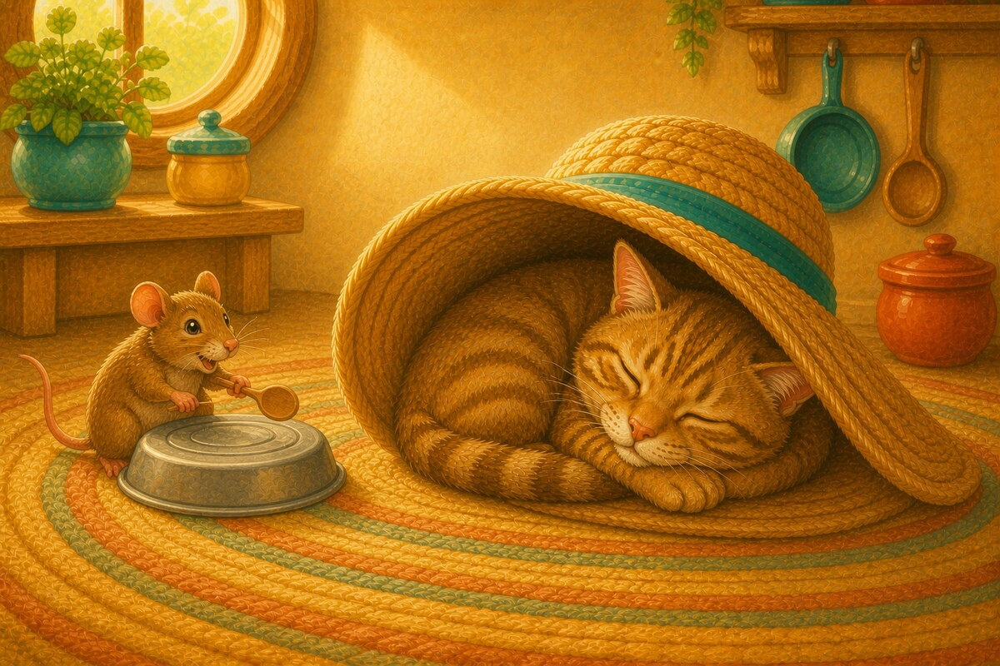
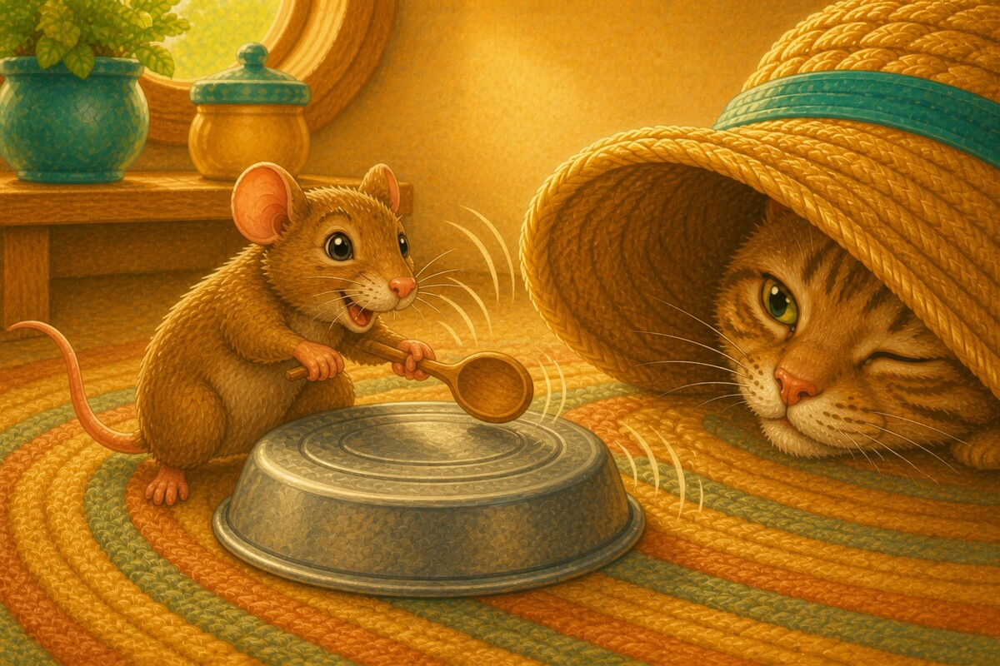
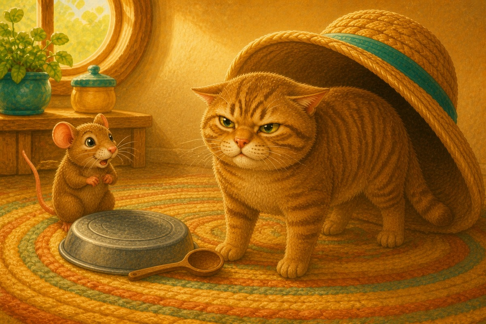
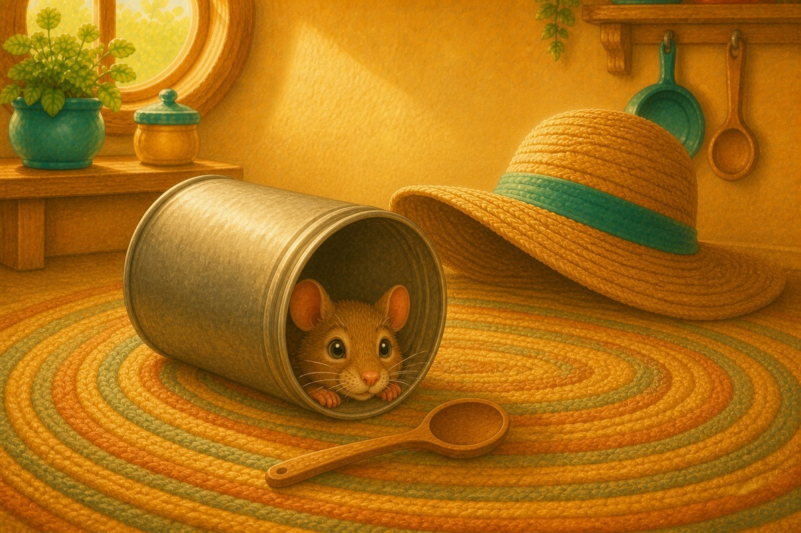
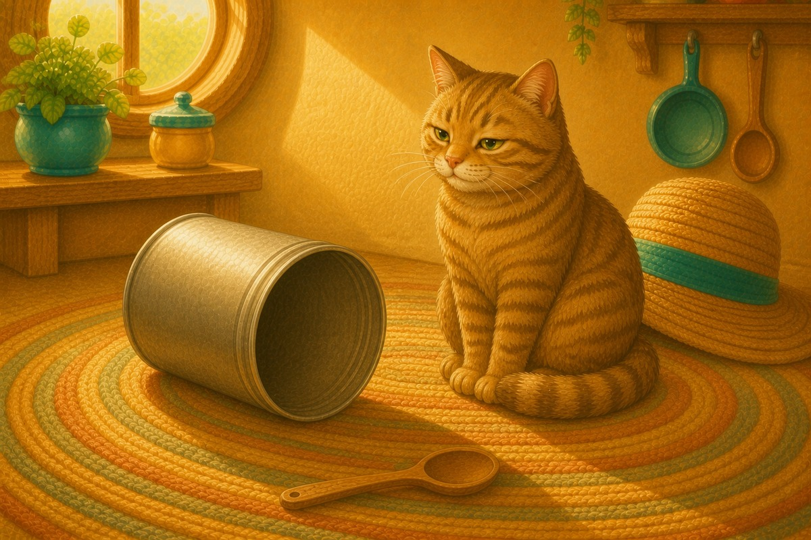
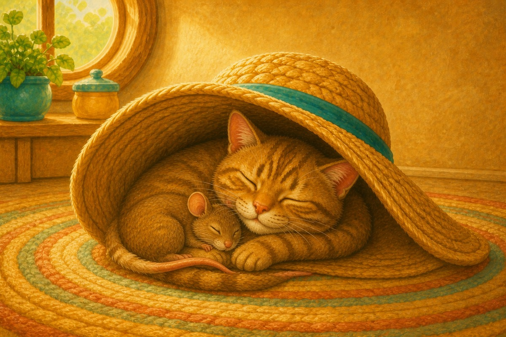

Page 1 of 8
A cat sat in a hat.
Every word is short A. A 8-page decodable story focusing on Short A · c e h r m d.


A cat sat in a hat.

A rat ran at the cat.

The cat can nap. The rat can tap.

Tap, tap, tap!

The cat is mad.

The rat hid in a can.

The cat sat and sat.

The rat and the cat nap in the hat!
This book has no word endings and no letter blends at all: every word is a plain three-sound word your child can sound out, apart from a, is and the. It is the best book on the shelf for a first fully independent read. If your child stalls, cover the word and reveal it one letter at a time rather than saying it for them. Notice the story begins and ends in the same hat — ask what changed in between.
SnackPack ABC & Alphabet continues with letter activities, read-together stories and more early phonics practice.